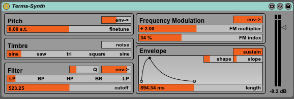

monome sum is a collection of essential monome applications, synchronized together, creating a flexible environment for creating music. The apps are simplified for easy exploration with enhanced visual feedback for vari-bright grids. Expanded versions are available in the monome application repository.
gome is based on the original polygome by stretta.
monome sum is included in the monome device installer. The application is installed in /Applications on OSX, and \Program Files\monome on Windows.
Open the monome sum application.

nb: for OSX 10.8+ you'll need to bypass gatekeeper the first time you open sum. control-click the app in finder, click 'open', then click 'open' again.
Attach your grid via USB and select it from the dropdown. You should see something like the following image:

smallbatch is an intermediary layer allowing the grid to switch effortlessly between available applications.
Change the active application by clicking the grey boxes. A pale blue colour highlights the current selection.

Master Controls allow all the application components to work together, by setting tempo, musical scale and global volume. There is a simple audio recorder provided to capture performances into a wave file.
Select from the Presets for quick sound transformation, exploring some of the many sonic possibilities of sum. All changes made can be stored and recalled easily.
The Scream is a 'panic button' allowing you to clear all current playback & patterns, starting with a fresh slate.
monome sum is comprised of six interlinked applications:
A cyclic poly-rhythm music box, where each column represents a voice. Notes are arranged left (lowest), to right (highest). The vertical dimension represents time, where top is fastest and bottom slowest.
Width & Pitch can also be modified to alter the notes that flin can play. Increasing Width stretches the high and low notes apart for lower bass, and higher highs. Shifting Pitch transposes the entire bank of notes together, while keeping everything locked in key.
A gravity-influenced modulator for affecting the timbre of sum's synthesizer. The puck slides around the surface as it is attracted toward keypresses.

Moving the puck upward on the grid makes the synthesizer sounds more aggressive, and resonant, while more subtle sounds are available downward. Panning around the horizontal space will shift the filter parameters to create changes in the spectrum of the synthesizer elements, where left sounds are bassier, while right sounds are brighter.
A simple step sequencer for triggering drum sounds. Standard percussion sounds are used by default, though these can be altered via the 'step sound editor'.
A dynamic pattern instrument, creating automatic melodies & arpeggiations. The grid maps pitches increasing from top-left to bottom-right.
A sample-playback engine for live-cutting samples and recording pattern gestures. monome sum comes preloaded with samples, or you can drag and drop your own into the mlr window.

A bank of virtual faders for controlling application wide parameters. Each fader has inertia for smooth fades and modulation.


monome sum includes a simple, yet flexible synthesis engine used to create all the sounds throughout the environment (excluding mlr). To create such a broad palette of sounds the synth uses both FM & subtractive synthesis approaches, plus an Attack-Decay envelope to control volume, with additional modulation routing options.
Pitch allows the tuning of the synth to be finetuned to match with samples loaded in mlr. The small env slider modulates the pitch with the envelope in either positive or negative direction, accordingly to the slider.
Timbre fades smoothly between different oscillator waveforms allowing for smooth control over harmonic content. Noise can be mixed in with the oscillator, which is particularly useful for percussion sounds.
The oscillator is processed by the Filter for sculpting the sonic response. Cutoff shifts the point at which the filter begins to take action. Q adds resonance, or emphasis, around the cutoff frequency. Env allows the Cutoff control to be modulated by the envelope.
The last Filter slider allows the response of the filter to be faded between many different responses. At either end is the classic Lowpass response, with the less common Bandpass, Highpass, and Band Reject (Notch) responses in between. Mixing smoothly between these responses allows subtle shifts between the standard responses.
Modulation controls a second, slave oscillator, for frequency modulating the main oscillator. FM multiplier sets the harmonic relationship between the oscillators, where higher multiples add upper harmonics to the sound, where lower settings add low frequencies and sub-octave tones. FM Index controls how much modulation should be applied to the main oscillator. Env allows the FM Index to be modulated according to the envelope.
Envelope is a slow changing modulation triggered each time a note is received. The output volume of the synth is always controlled by envelope. Length controls the duration of the modulation. The envelope contains attack and decay sections where Shape alters the linearity of these slopes - lower settings for softer attacks, higher settings for smoother tails. Slope shifts the amount of time spent in attack versus decay - lower settings for quick percussive attacks, higher settings for swelling synth tones.
In addition to changing applications by clicking the onscreen UI, the current app can also be changed directly from the grid.

Applications are available in the same order as listed in Smallbatch.
If you would like to change the location of the Route key, or remove it altogether:
Sum forces all generated notes to fall into the selected scales. Key and Scale set the bank of notes to select from. All modes of the scales are available through your choice of notes in flin & gome.
Tempo can be quickly set with the slider, or entered directly by clicking on the numerical display, typing your desired BPM, then hitting Enter (When click for numerical entry, a small triangle will appear to the left of the tempo display).
monome sum includes an audio recorder to capture live performances to disk.
In order to synchronize other devices or applications to sum, a MIDI clock output is available.
Preferences -> MIDI Clock.Upon loading, sum will select your default audio interface and be ready to make sound instantly. In the case that you want to select a different output destination or change other audio settings:
Preferences -> Audio Settings.monome sum includes 8 presets preloaded with useful musical departure points highlighting the breadth of sonic capabilities of the program. You can however, create your own collections of settings and return to them later.
Whenever you edit the settings of the current preset, via the app or the grid, those changes will be saved into the temporary save file. Changing between presets is instant and will not lose changes to the previous preset.
File -> Save As and give your preset collection a filename.File -> Open to reload a previously saved preset collection.These save files are complete collections of sounds that can be shared between users, though audio samples are not saved within the file and will need to be included alongside the save file.
monome sum was created by monome.org using Max 6.
This manual was created by Trent Gill for monome.org.
Contributions welcome. Submit a pull request to github.com/monome/llllllll or e-mail info@monome.org.